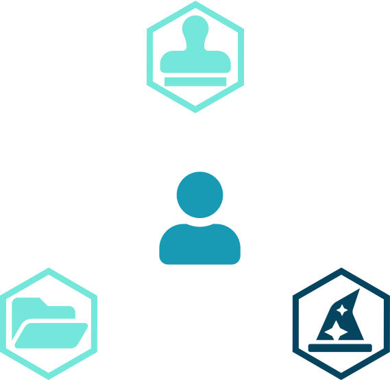
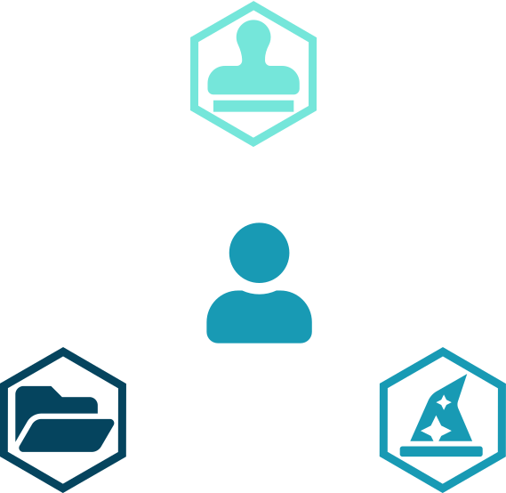
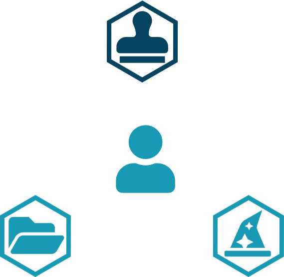
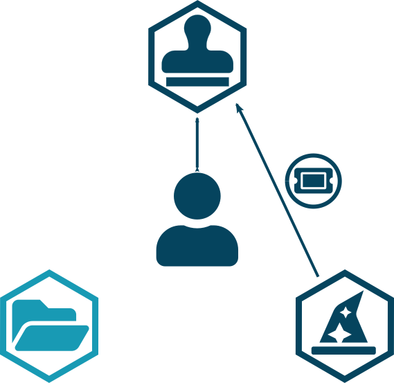
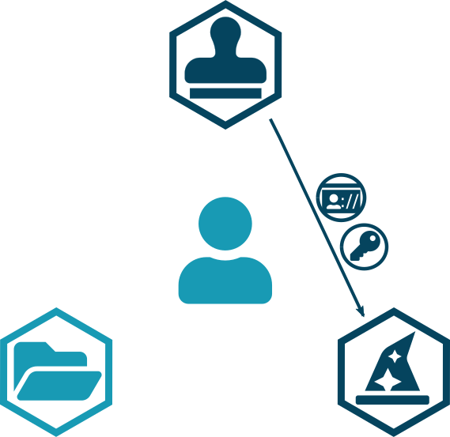
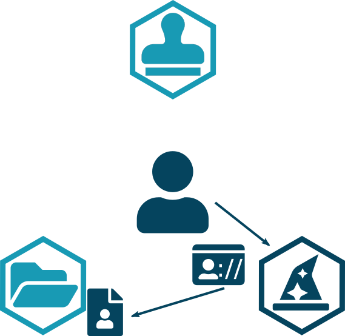
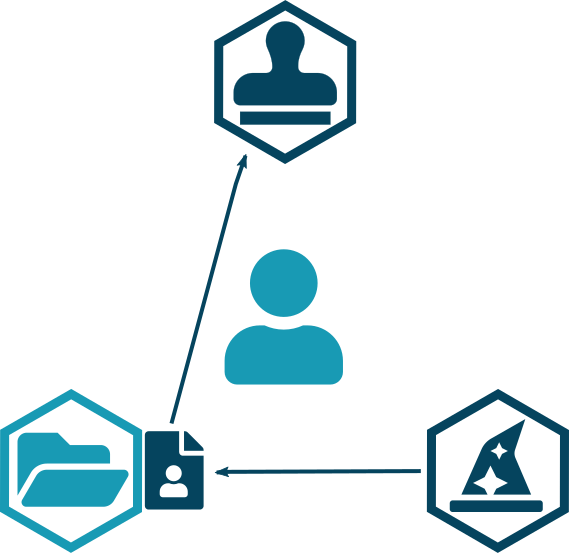

App WebID with Solid-OIDC
Components of the Solid architecture
The Resource Owner
- Fancy name for a user
- They control the data.
- They use apps to get services.

The Client
- Fancy name for an application
- It consumes the data.
- It creates more data.

The Resource Server
- Fancy name for a Pod.
- It hosts the data.
- It enforces access permissions.

The Identity Provider
- It identifies the user.

Overview of the OIDC "danse"
RO requests login to Client
- The Client doesn't manage the RO identity
- The Client dedirects the RO to the IdP
TODO
RO logs in IdP
- The user logs in the identity provider via OIDC
- The user is redirected to the app
- The app does an authenticated request to the IdP

IdP sends tokens to Client
- The app gets an access and an ID token.

Authenticated access
- The app can access private resources.

What does Solid-OIDC add?
What does Solid-OIDC add?
Universal user identity
Token links to WebID
- The app looks up the user's profile

IdP discovery
- The app looks up the user's profile
- The profile links to the identity provider.

IdP verification
- The RS looks at the token
- It checks that the IdP is trusted by the RO
Access control
- The RS enforces access control based on RO WebID
What does Solid-OIDC add?
Universal Client identity
OIDC security model
- The Client controls some IRI
- The IdP can check whether a Client controls a given IRI
- To do so, the IdP must have some information about the client
Static client registration
- The developer register their app to the IdP.
- The obtained Client credentials are long-lasting.
TODO merge with next slide

Static client registration
- The developer register their app to the IdP.
Dynamic client registration
- Only if not statically registered
- The Client credentials are ephemeral

Solid-OIDC Client Identifier
- No manual registration to the IdP
- The client ID is permanent
- Application access control can be enforced
- Credit to fontawesome for the icons (license)